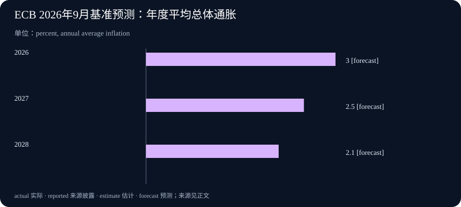

Daily Intelligence
2026-09-13 · Sunday · 周末观察，9 月 14 日补编。新闻事实限于 9 月 13 日之前已公开的来源，不倒填 14 日以后的事件。以下将声明观点、公司计划、央行决定与本刊分析分开；实际生成时间记录于元数据。
Today’s Thesis｜能产出答案之后，谁来定义成果？
数学界关于 AI 的声明、日本企业的实施合作与欧洲央行的政策决定，分别指向三种不同的成果：可理解的知识、可持续运行的业务和中期价格稳定。本刊判断，工具能力增长之后，更稀缺的是把目的、验收与责任连在一起。三件事并没有直接因果关系，但都不宜用一个看似漂亮的单项数字替代真正目标。
Executive Summary｜执行摘要
- 陶哲轩 9 月 11 日刊载数学界联署声明，提醒人们区分解题表现与知识理解。这是参与者的立场表达，不是本刊对某项 AI 数学突破的独立认证。声明原文
- Sakana AI、SCSK 与住友商事宣布业务合作，分工涉及技术、系统实施及产业场景；合作方向不等于已实现的客户收入。公司公告
- 欧洲央行 9 月 10 日决定加息，新的利率 9 月 16 日生效；公告中的中期通胀数字是预测，不是已经发生的结果。政策决定
- 下周观察重点应放在研究材料的可复核性、合作项目的实际验收和政策说明，而非把周末报道热度直接理解为需求或收益已经兑现。
AI Daily｜数学界提出的问题：答案之外还剩下什么
陶哲轩介绍，这份声明有 25 位初始签署者，均为菲尔兹奖得主。声明担忧，把解题数量作为主要目标，可能挤压概念理解、方法传承与认真署名所需的时间。其对 AI 能力和行业行为的判断属于签署者观点；本期没有核验任何具体未解难题是否被 AI 解决，也不据此认定某家公司存在学术不当行为。9 月 11 日声明
本刊分析：这里值得区分两种产品。第一种是一个可用的结果，例如一道题的结论；第二种是其他人能够理解、修改和继续使用的方法。前者可能通过一次核验得到支持，后者则要求明确假设、关键步骤和适用范围。结果正确与方法有教学价值可以同时成立，也可以并不同时成立，评价体系需要分别检查。
在企业中也有相似问题。一份自动生成的分析报告即使结论碰巧正确，若没有口径、材料版本和推理链，下一位接手者仍然无法安全更新它。组织可能得到一次性产出，却没有获得可持续的分析能力。问题不在于是否使用 AI，而在于使用之后，知识是否仍然能被解释、检验和转移。
一种具体的审核方式是要求成果同时附带三个简短说明：依据哪些输入、哪些条件改变会推翻结论、哪些部分尚未验证。对于代码，则要求能重现问题的测试和改动边界。对于数学或研究，还需要专业人员判断形式化表达是否对应原来的问题；“程序检查通过”本身不能替所有学术判断背书。
二阶影响可能出现在人才培养上。如果初级人员只领取最终答案，没有机会练习错误识别和条件变化，他们日后审核复杂系统的能力可能变弱。这是需要跟踪的风险假设，不是本期已经观测到的组织结果。可验证的信号包括独立复述能力、边界案例判断和离开原工具后能否继续工作。
Business Daily｜日本三方合作：技术进入业务，交接仍是关键
9 月 10 日公告将 Sakana AI 的研发、SCSK 的集成实施、住友商事的产业业务能力组合起来，拟从金融、制造、安全等场景推进。公告提及住友商事约 900 家合并业务公司及 10 万家客户基础；这些数字是业务覆盖背景，不是新增付费客户或已经完成的 AI 部署数。合作及角色说明
本刊的商业解释是，技术供应商与实施伙伴在解决不同问题。前者回答系统具备什么能力，后者需要处理老系统接口、数据定义、异常流程和运行责任。产业伙伴则帮助找到有经济价值且允许改造的场景。如果三方交接清楚，试点中发现的问题才可能转化为可复用方案；若交接不清，组织数量增加也可能增加协调成本。
可以用“异常发生后谁接手”来检查合作的真实成熟度。若模型读取了过期库存、业务系统暂时不可用或输出与客户承诺冲突，谁有权暂停动作、谁负责更正、谁承担复核成本？这些不是公告是否写得丰富的问题，而是试点能否进入稳定服务的条件。本期并无合同或客户验收材料，不能替三方回答。
商业观察上，客户基础应与转换过程分开记录：可接触的企业、同意试点的企业、完成验收的企业、持续付费的企业不是同一个分母。把它们混成“覆盖客户”容易放大短期预期。更有价值的后续披露，是重复交付所需时间是否下降、上线后的人工维护是否可控，以及不同产业是否仍需大量定制。
Macro Observation｜政策已决定，不等于效果已实现
欧洲央行决定将三项关键利率提高 25 个基点，9 月 16 日起存款便利、主要再融资及边际贷款便利利率分别为 2.50%、2.65%、2.90%。其基准预测为 2026—2028 年总体通胀分别平均 3.0%、2.5%、2.1%，并强调不预先承诺固定利率路径。9 月 13 日不能将新利率写成已生效。ECB 正式决定
本刊机制分析：利率变化影响融资与支出决策，但不同主体的传导速度并不一致。固定利率合同可能暂时不变，重新融资者则更快遇到成本变化。企业判断项目时应查看实际债务期限和合同重定价条件，而不是把政策调整幅度直接当成自身下个月的利息增幅。这是一般机制说明，不是针对特定公司的财务预测。
预测中的下降路径也不等于未来价格会普遍下降。通胀率降低通常描述价格上涨速度放缓，不能据此推断已发生的价格上涨被抵消。对于经营者，采购成本、工资和销售价格各自的调整节奏更重要；单一宏观数字不能说明利润率一定改善。
本期不提供交易建议，也不虚构周末行情或尚未公布的数据。周末适合检查情景：若成本压力持续，预算有哪些脆弱点；若需求减弱，哪些投入可以分阶段实施。行动应由自身现金流、合同和风险承受能力决定，不能只根据一份央行预测作确定性押注。
Signal Dashboard｜把可见信号与待验证结果分开
| 观察对象 | 已有证据 | 仍需验证 | 下一步应看什么 |
|---|---|---|---|
| AI 数学成果 | 联署声明已公开 | 具体成果的正确性及新方法价值 | 可复核材料与专业审阅 |
| 日本产业合作 | 公司宣布合作方向 | 付费转化、验收与运行成本 | 实际项目的交付记录 |
| 欧元区政策 | 加息决定与生效日明确 | 经济传导和预测能否实现 | 后续实际数据与政策解释 |
| 组织知识能力 | 本刊提出的检查框架 | 工具使用是否削弱独立判断 | 无工具复述与异常处理练习 |
前三行依据上文一手来源；最后一行是建议的内部观察方法，没有填入不存在的测量结果。未披露不等于零，也不等于已经失败。
Deep Insight｜把“完成”的定义从结果延伸到可接手性
以下为本刊综合分析，不是三份来源共同给出的结论。一个值得试验的判断是：当产出速度提高，瓶颈会从“能否做出东西”转移到“别人是否敢接手”。这并不意味着所有领域都会发生同样变化，而是提示我们不要只测量生成环节。交付后的解释、验证、修订和运行，可能决定整个任务的实际价值。
以一份周报为例。假设生成时间缩短，但负责人仍需逐条追溯来源，接手人又要重新确认统计口径，节省的写作时间就可能被后续成本抵消。这里的数字不需要由模型猜测；只需实际记录首次草稿时间、审核时间、返工次数和最终使用情况，就能判断变化发生在哪里。评价的对象应是完整任务，而不是最容易被演示的一段。
这也解释了为什么“正确”“有用”“可持续”应该分开验收。正确关注某个结论是否成立；有用关注它是否回答了真实问题；可持续关注输入变化、人员更换或工具不可用时能否继续运行。三者可以互相支持，但没有哪一项能自动推出另外两项。一个正确的答案可能不适合当前决策，一次成功试点也可能尚不具备重复交付条件。
组织可以从一个很小的动作开始：每次交付保留一个可复现的例子、一项明确的失败条件和一个接手人。可复现的例子帮助发现口径变化；失败条件提醒系统何时应停止；接手人保证异常不是掉进无人负责的空隙。它们不是增加审批层级，而是在已有责任范围内让交接变得具体。涉及新的权限或外部动作，仍应按原有批准边界处理。
接着要给“不知道”保留位置。若来源没有披露客户收入，输出应写未披露；若数据是预测，就标出预测时点；若成果只是厂商测试，就保留测试条件。这类标记看起来降低了结论的确定性，却提高了使用者选择下一步动作的能力。相反，把未知填成数字，虽然让表格完整，却会让后续判断建立在不存在的事实之上。
最后，自动化不应该把人的判断全部挤到发生事故之后。低风险、重复且定义稳定的步骤可以尽量自动执行；高影响动作前则应保留有意义的验证。验证必须围绕可能改变决策的错误展开，而不是机械增加检查项。长期优势或许不属于输出最多的团队，而属于能快速区分可用结果、暂缓结果和需要进一步调查结果的团队。这仍是本刊提出的管理假设，需要用实际运行记录检验。
Tomorrow Watch｜下周先确认日程，不预写结论
美联储官方日历列出 9 月 15—16 日会议，并标记附带经济预测摘要；截至本期历史截止点，会议尚未召开，不能预写决议或点阵图结果。FOMC 日历
9 月 14 日开始跟踪两条非固定日程事项：数学声明之后是否出现可供专业审核的新材料，以及产业合作是否披露具体项目验收。它们是观察清单，不是厂商承诺明日发布。对政策，则检查公告的生效日期与自身合同是否存在实际关联。
One Chart｜一张图分清“预测路径”和“已实现数据”

图中依次为 2026、2027、2028 年，数值为 3.0%、2.5%、2.1%，全部来自 9 月 10 日 ECB 基准预测，均标记为 forecast。单位是年度平均通胀率，不是月度环比，也不是累计物价涨幅；不能把它理解为三年实际观测折线。数据来源
Quote of the Day｜工具也应该改变理解方式
“A language that doesn't affect the way you think about programming, is not worth knowing.”
— Alan J. Perlis
中文：一种不能改变你对编程思考方式的语言，不值得学习。
出处：耶鲁大学托管的《Epigrams in Programming》第 19 条，页面注明原载 1982 年 9 月 SIGPLAN。原文
本刊解读：工具的价值不只在于代替一次动作，也在于是否帮助人发现更好的问题表达。这不是对今天某个 AI 产品的背书。
Action Items｜本周可以实际检查的三件事
- 从近期一份 AI 辅助成果中抽取一个重要结论，请接手人只凭附带材料复现判断，记录缺少的是来源、口径还是解释。
- 对一个试点项目区分“接触、试用、验收、持续使用”四个状态，不把客户覆盖背景当成已实现部署。
- 更新一份经营情景表，分开写已决定的政策、尚未生效的变化与未来预测；未知项目保持未知，不用猜测填满。